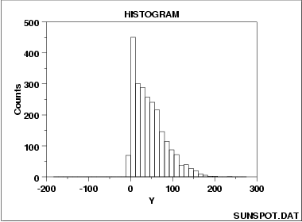

|
1.
Exploratory Data Analysis
1.3. EDA Techniques 1.3.3. Graphical Techniques: Alphabetic 1.3.3.14. Histogram
|
|||
| Right-Skewed Histogram |  | ||
| Discussion of Skewness |
A symmetric distribution is one in which the 2 "halves" of the
histogram appear as mirror-images of one another.
A skewed (non-symmetric) distribution is a distribution in which
there is no such mirror-imaging.
For skewed distributions, it is quite common to have one tail of the distribution considerably longer or drawn out relative to the other tail. A "skewed right" distribution is one in which the tail is on the right side. A "skewed left" distribution is one in which the tail is on the left side. The above histogram is for a distribution that is skewed right. Skewed distributions bring a certain philosophical complexity to the very process of estimating a "typical value" for the distribution. To be specific, suppose that the analyst has a collection of 100 values randomly drawn from a distribution, and wishes to summarize these 100 observations by a "typical value". What does typical value mean? If the distribution is symmetric, the typical value is unambiguous-- it is a well-defined center of the distribution. For example, for a bell-shaped symmetric distribution, a center point is identical to that value at the peak of the distribution. For a skewed distribution, however, there is no "center" in the usual sense of the word. Be that as it may, several "typical value" metrics are often used for skewed distributions. The first metric is the mode of the distribution. Unfortunately, for severely-skewed distributions, the mode may be at or near the left or right tail of the data and so it seems not to be a good representative of the center of the distribution. As a second choice, one could conceptually argue that the mean (the point on the horizontal axis where the distributiuon would balance) would serve well as the typical value. As a third choice, others may argue that the median (that value on the horizontal axis which has exactly 50% of the data to the left (and also to the right) would serve as a good typical value. For symmetric distributions, the conceptual problem disappears because at the population level the mode, mean, and median are identical. For skewed distributions, however, these 3 metrics are markedly different. In practice, for skewed distributions the most commonly reported typical value is the mean; the next most common is the median; the least common is the mode. Because each of these 3 metrics reflects a different aspect of "centerness", it is recommended that the analyst report at least 2 (mean and median), and preferably all 3 (mean, median, and mode) in summarizing and characterizing a data set. |
||
| Some Causes for Skewed Data |
Skewed data often occur due to lower or upper bounds on the
data. That is, data that have a lower bound are often skewed
right while data that have an upper bound are often skewed left.
Skewness can also result from start-up effects. For example,
in reliability applications some processes may have a large number
of initial failures that could cause left skewness. On the
other hand, a reliability process could have a long start-up
period where failures are rare resulting in right-skewed data.
Data collected in scientific and engineering applications often have a lower bound of zero. For example, failure data must be non-negative. Many measurement processes generate only positive data. Time to occurence and size are common measurements that cannot be less than zero. |
||
| Recommended Next Steps |
If the histogram indicates a right-skewed data set, the
recommended next steps are to:
|
||